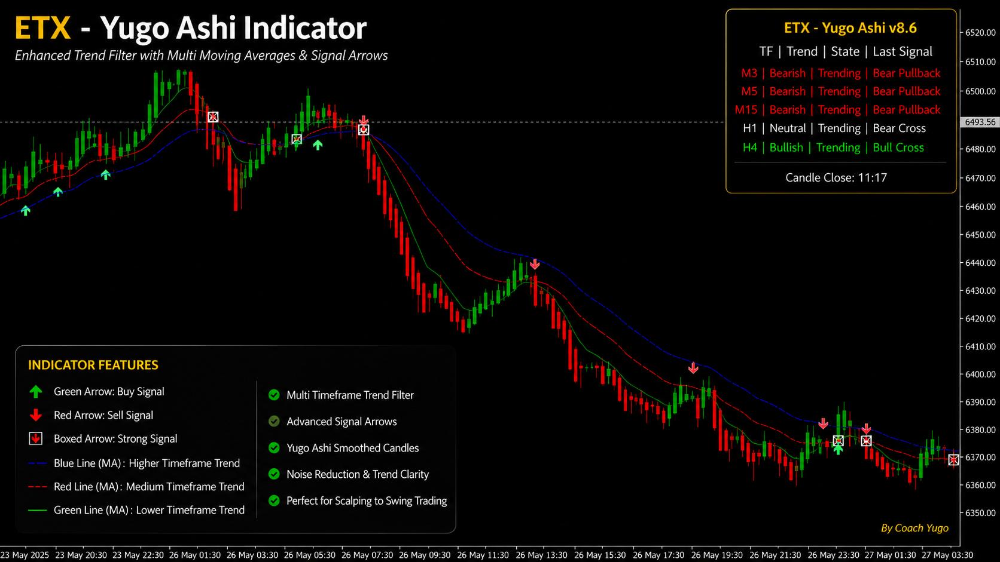

Clearer Trend Bias
Helps you identify whether the market is showing bullish, bearish, or unclear conditions.
Yugo Ashi Indicator for MT5
A trading decision-support tool designed to help traders read trend bias, spot possible confirmations, and plan trades with better structure.
If you are tired of guessing whether to buy, sell, or wait, Yugo Ashi helps simplify market reading through cleaner visual guidance for trend direction, signals, support and resistance, and trade planning.

The Common Problem
Many traders struggle because they enter too early, too late, or without confirmation. Without a system, trading can feel confusing and emotional.

The Solution
Yugo Ashi is an MT5 indicator created to support traders in reading trend direction, identifying possible entry confirmations, and planning trades with better structure.
It does not guarantee profit and it does not remove trading risk. It gives traders a cleaner visual guide for more disciplined trading decisions.
See Yugo Ashi Access PlansBenefits
Designed to support clearer analysis, better planning, and more disciplined trading decisions.
Helps you identify whether the market is showing bullish, bearish, or unclear conditions.
Provides visual signals that may help guide possible buy or sell setups.
Reduces chart confusion by organizing important market information visually.
Supports planning around entry areas, stop loss, take profit, and market zones.
Useful for traders who want a simpler way to understand market direction.
Helps traders avoid random entries by encouraging confirmation-based decisions.
Features
A complete visual guide for MT5 traders who want cleaner market analysis.
Creates a cleaner view of market direction and candle behavior.
Provides possible confirmation points for structured trade planning.
Helps traders understand bullish, bearish, or unclear conditions.
Supports better alignment between higher and lower timeframe views.
Helps identify important market areas for better planning.
Supports more structured planning before taking a trade.
Designed for MetaTrader 5 desktop users.
Includes installation and usage guidance for new users.
Limited Promo
For a limited time, you can avail Yugo Ashi access with a special promo discount. Submit your order through the ETX client portal for verification.
Access Plans
Select the access period that fits your learning and trading needs.
Best for traders who want to try Yugo Ashi and start learning the system.
Best for traders who want more time to practice and build familiarity.
Best value for serious traders who want long-term access.
Simple Process
The platform keeps subscription requests, payment proof, and verification in one flow.
Register in the ETX client portal.
Select your preferred Yugo Ashi subscription period.
Submit payment method, reference number, amount, and proof.
ETX reviews your proof before activation.
Your active access reflects inside your client profile.
Install Yugo Ashi on MT5 and follow proper risk management.
For Beginners
If you are new to trading, Yugo Ashi can help you read the chart better, but you still need proper foundation, risk management, and trading discipline.
Learn market structure, platform setup, risk management, and proper trade planning.
Ask About Elite-X Course
For Personal Guidance
For traders who want deeper learning, personal guidance, chart review, and structured coaching, you can ask about our Pro-X Exclusive Mentoring Program.
FAQ
Clear answers before you avail Yugo Ashi.
Yes. It is designed to make chart reading cleaner, but beginners should still learn trading basics and risk management.
No. Yugo Ashi is a trading support tool for analysis, confirmation, and trade planning.
Yugo Ashi is designed for MetaTrader 5 desktop users.
You will receive access details, setup guide, tutorial support, and account status through the ETX process.
Start With Structure
Yugo Ashi is designed to help you simplify market analysis, improve confirmation-based decisions, and trade with better planning.
Trading involves risk. Results are not guaranteed. Tools, indicators, EAs, webinars, and educational materials are for guidance, analysis, automation, or educational support only. Users are responsible for their own trading decisions, risk management, and account results.